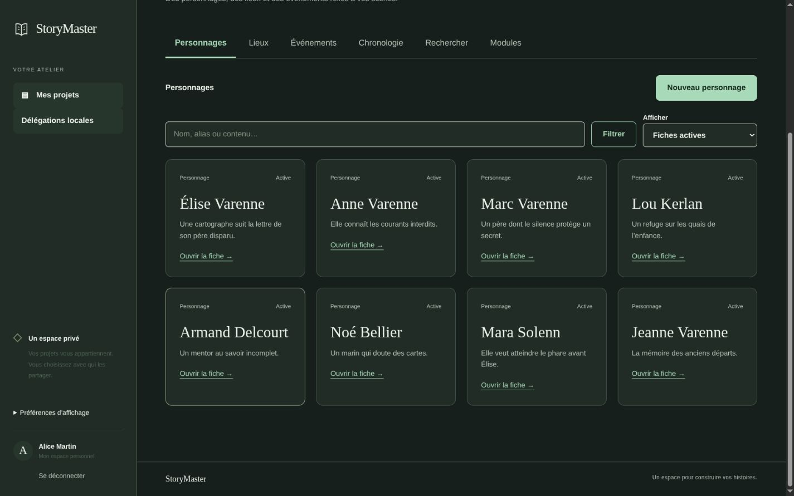
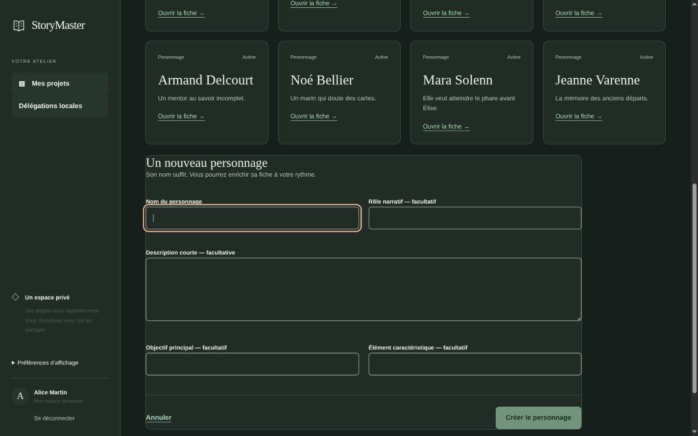
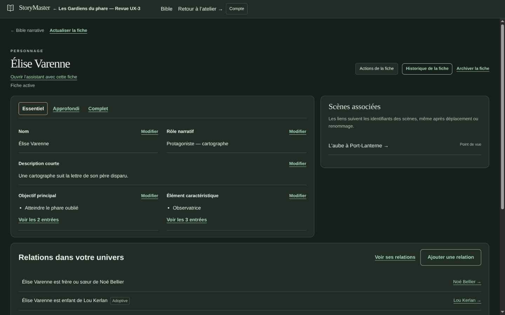
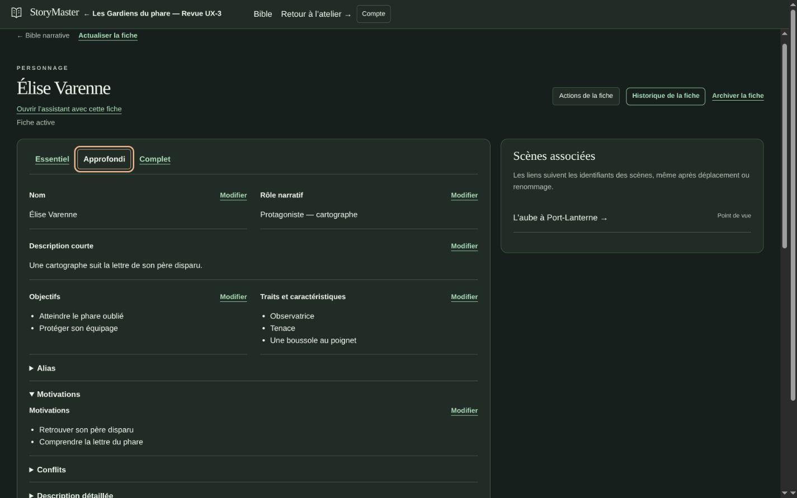
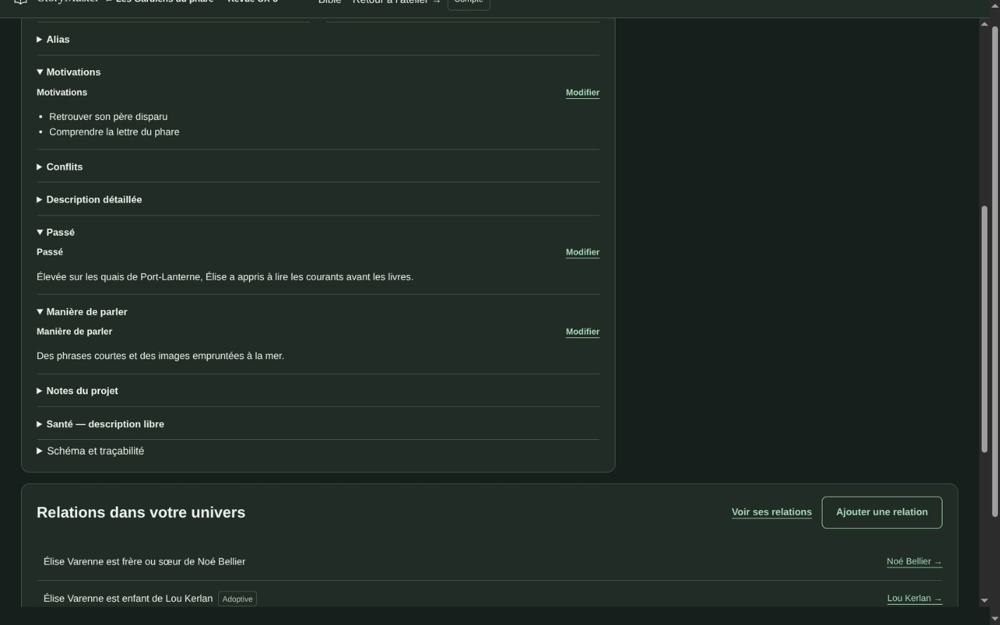
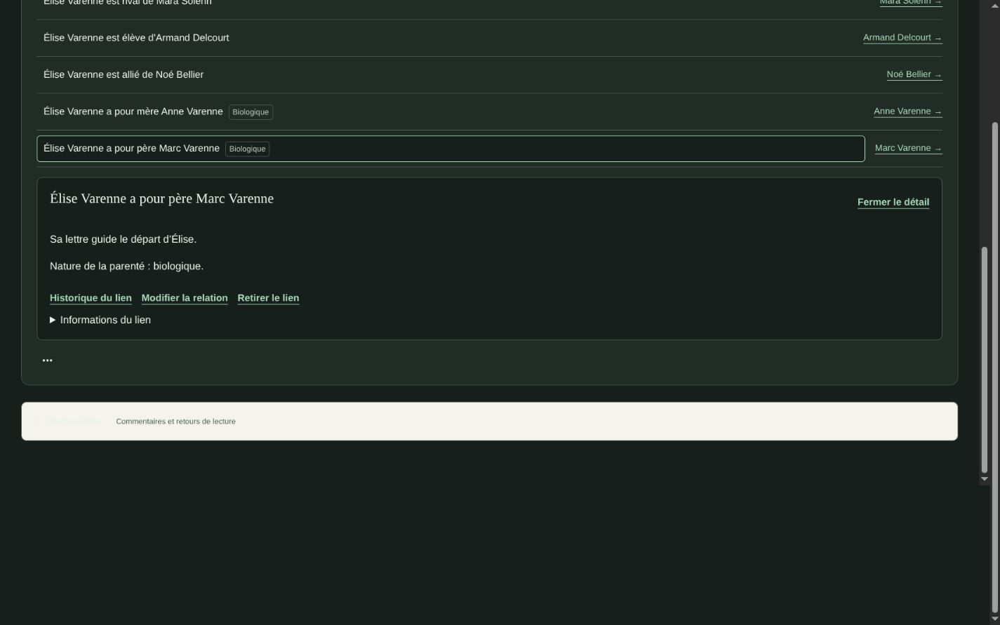
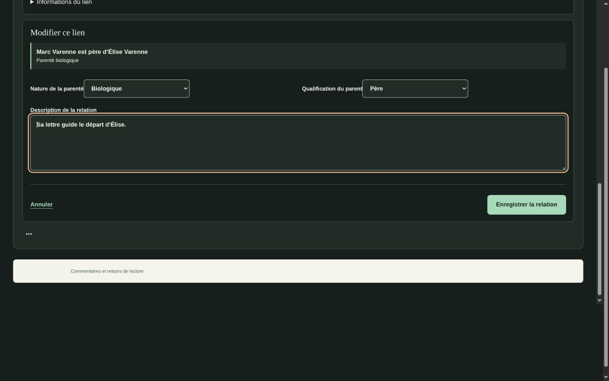
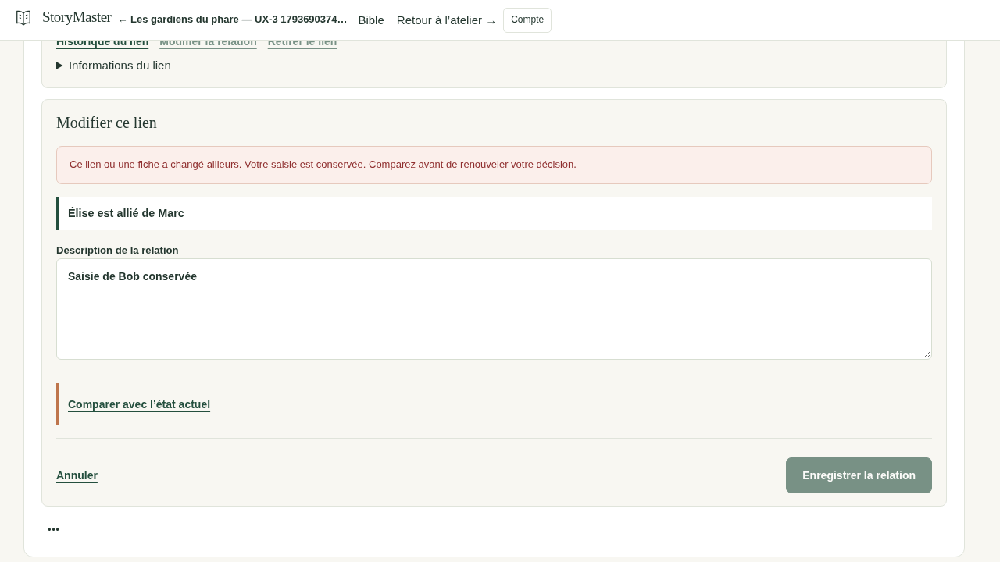
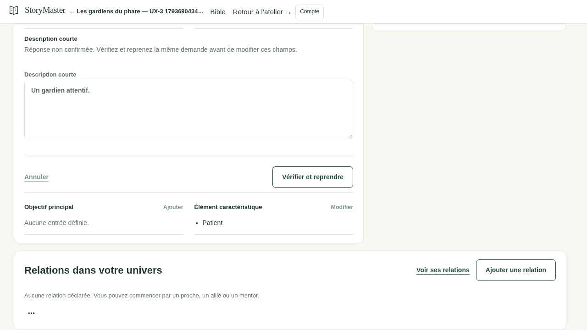

StoryMaster — Revue UX-3
Fiches progressives, parentés et relations visuelles. Images natives non retouchées, données synthétiques. Cliquez sur une image pour l’ouvrir à sa taille originale.
La réception ergonomique et les objectifs de temps restent humains. Brouillons en mémoire uniquement ; aucune fonction UX-4 ajoutée.
La même fiche avant / après
Fenêtre demandée : 1280 × 720
Fenêtre demandée : 1440 × 900
Fenêtre demandée : 1920 × 1080
Fenêtre demandée : 1000 × 720
Construire et enrichir un personnage

La Bible et les huit personnages de revue 1425 × 891

Création rapide : seul le nom est requis 1425 × 891

Essentiel : synthèse de la fiche unique 1440 × 900

Approfondi : sections et informations facultatives 1425 × 891

Complet : passé, voix, motivations et traçabilité 1425 × 891

Lecture inverse et nature biologique de la parenté 1425 × 891

Édition contextuelle — aucun changement enregistré pour cette capture 1425 × 891
Explorer les relations
Les vues sont explicitement partielles. Développer Marc charge Jeanne ; aucun lien supplémentaire n’est déduit ni créé automatiquement.
Conflit et réponse inconnue

Deux auteurs : base périmée et saisie conservée 1280 × 720

Réponse perdue après commit : reprise explicite de la même demande 1280 × 720